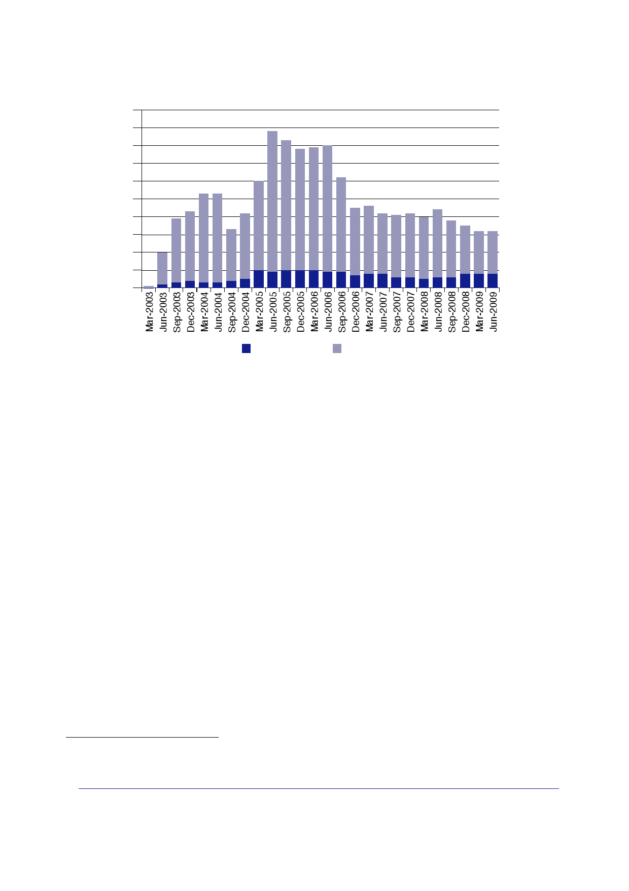

15.1 | Civilian
personnel
100
90
80
70
60
50
40
30
20
10
0
DFID civil
servants DFID contractors
921.
Sir Suma
Chakrabarti explained the role of DFID “consultants” to the
Inquiry:
“… what we
were very keen to do was use consultants in … project work
around
certain
projects that had to be completed with deep technical skills that
DFID staff
no longer
have. We don’t have those water engineers and power engineers we
used
to have
…
“The DFID
staff were working much more at the policy end on capacity. So how
do
you put a
budget together in the Ministry of Finance? What would you need to
run
a Prime
Minister’s office properly, and those sorts of things that DFID
staff focused
on much
more.”
922.
A 2013 report
on DFID’s use of contractors by the Independent Commission
for
Aid Impact
explained that they were used in roles ranging from procuring
equipment and
providing
technical advice to implementing development
programmes.610
923.
The FCO, with
a focus on bilateral and policy work carried out by core
FCO
staff,
employed contractors in smaller numbers, and principally during the
CPA period.
In January
2004, the FCO employed 23 contractors in Baghdad to work for the
CPA.611
In October
2004, there were just two FCO contractors in Iraq.612
610
Independent
Commission for Aid Impact, Report 23, May 2013, DFID’s Use
of Contractors to Deliver
Aid
Programmes.
611
Letter Jay
to Turnbull, 14 January 2004, ‘Iraq – Civilian Staffing’ attaching
Paper, ‘Iraq: Civilian Staffing’.
612
Select
Committee on Foreign Affairs Minutes of Evidence, 24 March
2005, Letter to
the Chairman of the
Committee from
the Secretary of State for Foreign and Commonwealth Affairs, 2
November 2004.
405